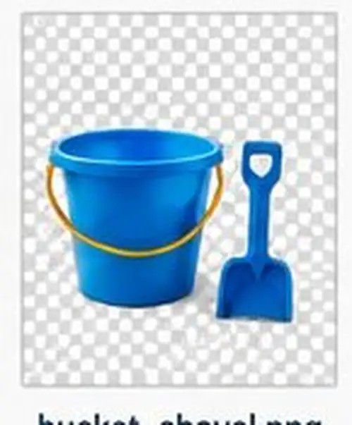

Your starting photograph.
Study the image before opening Photoshop. The people, gulls, sailboat, cooler, umbrella, open sand, and blank wooden sign are all deliberate editing opportunities.

beach-starter.pngKeep the original untouched in your PSD.
Provided asset bank.
Choose any three of these provided images and decide where they belong. You are responsible for scale, perspective, lighting, colour and shadows.

Choice B
Beach chairs
Good for Free Transform, perspective, grounding and cast shadows.
Download chairs

Choice D
Bucket + shovel
Good for size judgment, shadow direction and foreground placement.
Download bucket set{kind=link}

Choice E
Good Vibes graphic
Designed for the blank wooden sign. Use Perspective/Distort/Warp to make it follow the sign surface.
Download graphicImportant: provided assets do not replace the selection requirement. You must also find one real photograph with its original background still visible and isolate the subject yourself using selection + mask tools. Do not search for “transparent PNG.”
What you must do.
1
Save an editable working file
Open the starter image, save as PSD, duplicate the background layer, and keep the original untouched.
2
Remove two existing elements
Choose from the walkers, gulls, sailboat, or another visible distraction. Repair the missing area so the removal is not obvious.
3
Recolour one existing object
Change the cooler or umbrella while preserving natural highlights, shadows and texture.
4
Add three provided assets
Choose any three from the asset bank. You decide where they go; do not simply copy another student's layout.
5
Find one outside photo
Choose a photographic subject with a background you must remove. Record the source URL and explain why its angle/light fit this scene.
6
Use selection + masks
Use Select Subject, Object Selection, Quick Selection and/or Select and Mask. Keep the result editable with a Layer Mask.
7
Transform for realism
Use Free Transform for scale/rotation. Use Distort/Perspective/Warp on at least one element — the sign graphic is an ideal opportunity.
8
Correct and integrate
Use at least two Adjustment Layers, with at least one masked or clipped locally. Match colour, exposure, sharpness and saturation.
9
Create believable light + shadow
Add contact/cast shadows where objects touch the sand. Use Dodge/Burn or local adjustments where needed.
10
Use one blend mode deliberately
For example Multiply for a shadow, Soft Light for tonal integration, or Screen for a light effect. Be able to explain why.
11
Audit at 100%
Check halos, repeated cloning patterns, hard cutout edges, wrong shadow direction, mismatched colour and unrealistic scale.
12
Export + defend
Keep the layered PSD and export a final JPG. Complete the short edit/source log below.
Evidence checklist.
Check each item as you complete it. Your progress is stored only in this browser.
Source log.
The provided assets are already documented. Only record the outside photograph you found yourself.
Short edit log.
What quality looks like.
| Evidence | 4 · Advanced | 3 · Competent | 2 · Developing | 1 · Beginning |
|---|---|---|---|---|
| Selections + masks | Complex edges are clean and editable; no obvious halos. | Selections are clean with minor edge issues. | Several rough edges or mask errors remain. | Major selection problems or destructive erasing. |
| Integration | Scale, perspective, colour, sharpness, light and shadows work together convincingly. | Added objects belong in the scene with minor inconsistencies. | Several mismatches weaken believability. | Objects look pasted on. |
| Workflow | Layers, masks, adjustments and naming show confident non-destructive control. | Required workflow is present and organized. | Workflow is inconsistent or partially destructive. | Required techniques are largely absent. |
| Independence | Chooses tools strategically and improves beyond minimum requirements. | Applies learned techniques with little support. | Needs some help choosing/applying techniques. | Needs continuous step-by-step support. |
Submission.
Working file
Lastname_Firstname_BeachComposite.psdDo not flatten. Keep masks, adjustments and source layers editable.
Final + evidence
Lastname_Firstname_BeachComposite.jpgLastname_Firstname_BeachComposite_EditLog.txtYour teacher may also ask to see the PSD Layers panel during a quick conversation.